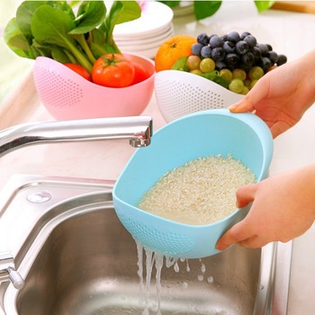

So you want to know how to make Lao Sticky Rice?
Traditionally, the people of Laos steam the rice by suspending it in a cone-shaped woven bamboo basket over a tall pot of boiling water. If you don't already have the supplies or don't know what is needed, please check out the supply list here. Now, let's learn how to make Khao Niaow so we don't have to go to a restaurant every time we're in the mood for this yummy goodness!
Step by Step Guide (pics and video links below) :
- Rinse the rice at least 3 times to wash away the starch and any debris.
- Soak the rice for at least 3 hours or overnight. If you're short on time, you can soak your rice in hot water for 1 hour.
- When you are ready to cook the rice, drain well and rinse one more time. Put drained rice into bamboo steaming basket.
- Put steaming basket on steaming pot, cover and steam on high for 15 minutes.
- Flip rice and steam for an additional 5 minutes.
- Stir the rice to release steam and place in your Thip Khao.
|  | .jpg) |
 |
 |
 |
.jpg) |
Pictures don't really do the process justice, so here are some videos to watch. Links will open in a new tab or window.
Sticky Rice Lao Style by S KOS
How to make KHAO NIEW by House of X Tia
How to Cook Sticky Rice by RinS CookBook
How To Cook Sticky Rice by Scoff
Embedding Disabled by Request | Please click on the text link above to watch the video.